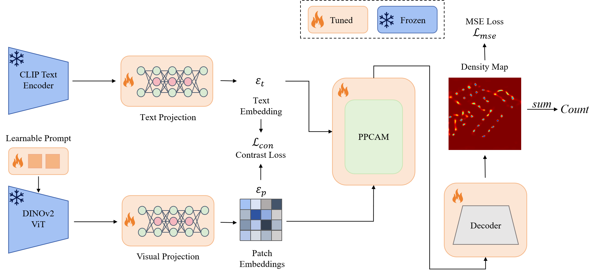

基于空间-频域协同与极性感知的
文本引导目标计数研究
文本引导目标计数研究
硕士学位论文开题报告
汇报人: 钱城
指导教师: 桑军
日期: 2026年1月
目录 CONTENTS
01研究背景与意义
02国内外研究现状与挑战
03研究内容与方案
04技术路线与实施
05预期成果与创新
06研究基础与条件
07年度研究计划
目标计数的重要性
广泛应用于公共安全监控、交通流量管理、城市规划及生态监测等领域，是计算机视觉的核心任务。
传统方法的局限性
现有全监督方法依赖大量标注数据，且对新颖类别的泛化能力较差，难以适应开放世界场景。
零样本目标计数的价值
无需预定义类别训练，通过文本或范例引导实现计数，具有极高的理论研究价值和实际部署潜力。

图：高密度人群场景下的目标计数应用
特定类型计数
- 针对特定类别（人群、车辆、细胞）优化
- 依赖大规模特定领域数据集
- 泛化性差，跨域性能显著下降
少样本/无参照计数 GMN, FamNet
- 利用少量范例（Exemplars）进行匹配
- 减少了标注需求，但仍需人工干预
- 对范例质量极其敏感
零样本目标计数 CLIP-Count, VLCounter
- 基于视觉-语言大模型（CLIP）
- 无需样本，仅需文本描述
- 当前痛点：语义对齐偏差，定位精度不足
现有问题总结
1. 多模态融合不足：文本与视觉特征交互简单。
2. 尺度变化敏感：小目标在频域信息易丢失。
3. 定位与计数不匹配：极性感知能力弱。
2. 尺度变化敏感：小目标在频域信息易丢失。
3. 定位与计数不匹配：极性感知能力弱。

⚠️ 语义对齐偏差
视觉特征与文本描述之间存在语义鸿沟，易将背景误判为目标。
🛡️ 极性感知与双向交互
引入正负样本对比机制，构建视觉-文本双向信息流，锐化语义边界，精准抑制背景噪声。
📉 密集场景特征混淆
高密度区域目标重叠严重，传统CNN局部卷积难以捕捉全局分布。
🌊 空间-频域协同感知
引入频域（FFT）信息，利用频谱卷积的全局感受野特性，从全局视角辅助密集区域的计数。
🔍 尺度变化剧烈
自然场景中目标大小不一，小目标在深层网络中易丢失细节信息。
🏗️ 多尺度金字塔结构
采用特征金字塔（FPN）与自适应跳过连接，融合深层语义与浅层细节，确保各尺度目标均可被捕获。
方案一
AMS-Counter: 空间-频域多视角融合
💡 Motivation / 动机
传统CNN仅在空间域提取特征，受限于局部感受野，难以捕捉密集场景的全局密度分布。复杂背景（如树木、阴影）易导致特征混淆。引入频域信息（Frequency Domain）可提供对噪声鲁棒的全局上下文视角。
多视角特征融合模块 (AMFFM)
构建双流架构，并行提取空间域的纹理细节与频域的幅度/相位谱特征。通过交叉注意力机制实现互补信息的深度融合，显著提升特征的判别力。
无偏快速傅里叶卷积 (UFFC)
基于FFT实现频谱卷积，利用其全局感受野特性捕捉图像的周期性密度模式，有效克服局部卷积在极高密度区域的“视野盲区”问题。
自适应跳过连接 (ASC)
引入可学习的门控机制，动态调节深层语义特征与浅层细节特征的融合比例，解决小目标在深层网络中信息丢失的问题。

图：AMS-Counter 基础网络架构示意
方案二
PolaCount: 金字塔极性感知跨模态注意力
💡 Motivation / 动机
现有零样本计数模型存在严重的语义对齐偏差，常将背景误判为目标。且自然场景中目标尺度变化剧烈（Scale Variation）。需要引入正负样本对比（极性）来锐化语义边界，并结合金字塔结构适应多尺度。
极性感知相似度计算
创新引入“正向”（目标）与“负向”（背景）文本提示对。利用对比学习思想，抑制与负向提示相似的图像区域，最大化正向区域的响应，显著降低误检率。
双向交叉注意力机制
摒弃单向的文本引导模式，构建视觉到文本、文本到视觉的双向信息流。确保视觉特征能精准对齐到特定的语义描述，实现细粒度的跨模态交互。
金字塔多尺度级联结构
采用特征金字塔网络（FPN）思想，在不同分辨率层级上逐级预测密度图。从深层的高级语义定位到浅层的高分辨率修正，精确捕获各种尺度的目标。

图：PolaCount 跨模态交互架构示意
📚 实验数据集
FSC-147 (Few-Shot Counting)
核心 包含147个类别，6135张图像。
特点：类别丰富，跨度大，专为少样本/零样本设计。
CARPK (Car Parking Lot)
泛化 包含近90,000辆汽车的航拍图像。
用途：验证模型在特定密集场景下的跨域泛化能力。
ShanghaiTech (Crowd Counting)
挑战 高密度人群计数数据集。
用途：测试模型在极端拥挤场景下的鲁棒性。
📏 评估指标
1. 平均绝对误差 (MAE)
MAE = (1/N) * Σ | P_i - G_i |
衡量预测值与真实值之间的平均偏差，反映计数的准确性。
2. 均方根误差 (RMSE)
RMSE = √ [ (1/N) * Σ (P_i - G_i)^2 ]
对大误差更敏感，反映计数的稳定性与鲁棒性。
第一阶段：准备
基线模型复现
& 数据集构建
& 数据集构建
第二阶段：核心算法研发（并行）
AMS-Counter
空间-频域特征融合无偏FFT卷积
PolaCount
极性感知注意力跨模态对齐
第三阶段：优化与验证（独立）
实验 I
零样本泛化测试空间-频域协同的有效性验证
实验 II
零样本泛化测试极性感知的有效性验证
可行性保障： 完备的GPU计算资源 + 成熟的PyTorch框架 + 已验证的CLIP预训练模型
★
主要创新点
提出空间-频率域协同机制，突破单一视角特征提取的局限性。
设计极性感知双向注意力，解决零样本计数中的定位漂移问题。
构建渐进式训练策略，显著提升模型在少样本/零样本场景下的收敛速度。
✓
预期成果
构建基于多视角融合的零样本计数框架 (AMS-Counter / PolaCount)。
发表高水平学术论文 2-2 篇 (CCF推荐会议/期刊)。
申请国家发明专利 2 项。
前期研究基础
"AMS-Counter: Text-Guided Zero-shot Object Counting via Adaptive Multi-view Similarity-map"
PolaCount: Text-specified zero-shot object counting with pyramid polarity-aware cross-attention
文献调研与代码库
实验环境与数据
硬件平台： NVIDIA RTX 4090 / A100 服务器
软件框架： PyTorch, OpenCV, HuggingFace Transformers
数据集： FSC-147, CARPK, ShanghaiTech (已准备完毕)
2026.1-3
基线复现
数据准备
数据准备
2026.4-8
核心算法
研发与优化
研发与优化
2026.9-12
系统实验
论文撰写
论文撰写
2027.1-2
论文投稿
初稿修改
初稿修改
2027.3-4
学位论文
答辩准备
答辩准备
敬请各位老师批评指正
THANKS FOR YOUR ATTENTION
汇报人：钱城
2026年1月
2026年1月